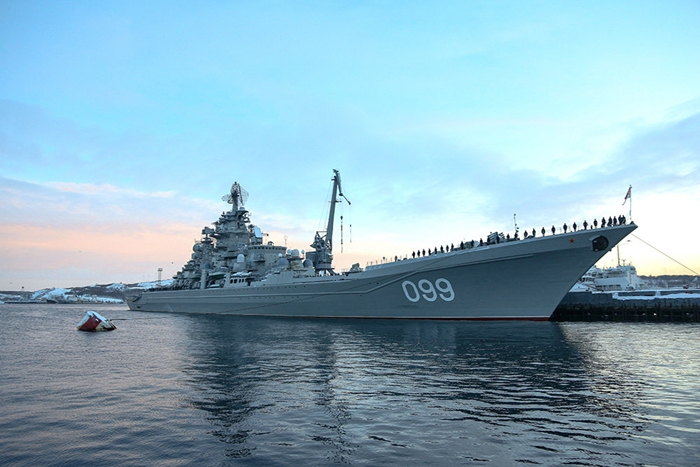

Пётр Великий
Атомный тяжелый крейсер. Наибольший в мире действующий боевой корабль, не авианосец. В длину
250 м, в ширину 25 м, высота 59 м, водоизмещение более 23 тонн. Силовая установка – 2
ядерных реактора, есть 2 вспомогательных котла, 2 турбины и 4 электростанции, по 4
паротурбогенератора и газотурбогенератора, 2 гребных вала. Способен развивать скорость 32
узла. В автономном плавании может находиться до 60 суток, этот срок ограничен объемом
запасов продовольствия, 3 года может не пополнять топливо. Корабль может поражать крупные
цели, находящиеся над водой, защищать морские соединения от нападения с воздуха и от атак
подлодок. Имеет неограниченную дальность плавания, в оснащение входят крылатые ракеты,
дальность полета которых составляет более 600 км.
Содержание
Конструкция
- Длина: 250,1 м. (наибольшая)
- Ширина: 25,0 м. (по ватерлинии)
- Высота от уровня основной плоскости: 59,0 м.
- Осадка: 10,3 м (по носовому бульбу)
- Водоизмещение стандартное: 23 750 тонн.
- Водоизмещение полное: 25 860 тонн.
- Энергетическая установка: 2 ядерных реактора типа КН-3 (300 МВт), 2 вспомогательных котла, две турбины по 70 тыс. л. с. (всего 140 тыс. л. с.), 4 электростанции суммарной мощностью 18 тыс. кВт, 4 паротурбогенератора мощностью 3000 кВт, 4 газотурбогенератора по 1500 кВт, два гребных вала.
- Скорость: 32 узла (59 км/час).
- Автономность плавания — 60 суток по продовольствию и запасам, 3 года по топливу.
- Длина 49 коридоров корабля — более 20 километров. Корабль имеет 6 палуб, 8 ярусов. Высота фок-мачты от уровня основной плоскости — 59 метров.
- Экипаж крейсера — 744 человек (101 офицер, 130 мичманов, 513 матросов) +18 человек лётный персонал. Они размещены в 1600 помещениях корабля, среди которых 140 одно- и двухместных кают для офицеров и мичманов, 30 кубриков для матросов и старшин (на 8—30 человек каждый), 220 тамбуров. Экипаж располагает 15 душевыми, двумя банями, сауной с бассейном 6 × 2,5 м, двухуровневым медицинским блоком с лазаретами-изоляторами, аптекой, рентгеновским и стоматологическими кабинетами, амбулаторией, операционной, спортзалом, оборудованным тренажёрами, тремя кают-компаниями для мичманов, офицеров и адмиралов, салоном для отдыха с бильярдом и роялем. Есть также внутрикорабельная телестудия и 12 бытовых телевизоров в каютах и кубриках, не считая 30 мониторов для просмотра передач, которые транслируются по кабельным сетям корабля.
- Length: 250.1 m. (largest)
- Width: 25.0 m. (along the waterline)
- Height from the level of the main plane: 59.0 m.
- Draft: 10.3 m (on the nasal bulb)
- Standard displacement: 23,750 tons.
- Full displacement: 25,860 tons.
- Power plant: 2 nuclear reactors of the KN-3 type (300 MW), 2 auxiliary boilers, two turbines of 70 thousand horsepower (140 thousand horsepower in total), 4 power plants with a total capacity of 18 thousand kW, 4 steam turbine generators with a capacity of 3000 kW, 4 gas turbine generators of 1500 kW, two propeller shafts.
- Speed: 32 knots (59 km/h).
- The autonomy of navigation is 60 days for food and supplies, 3 years for fuel.
- The length of the 49 corridors of the ship is more than 20 kilometers. The ship has 6 decks, 8 tiers. The height of the foremast from the level of the main plane is 59 meters.
- The crew of the cruiser is 744 people (101 officers, 130 midshipmen, 513 sailors) + 18 flight personnel. They are located in 1,600 rooms of the ship, including 140 single and double cabins for officers and midshipmen, 30 cabins for sailors and petty officers (for 8-30 people each), 220 vestibules. The crew has 15 showers, two baths, a sauna with a 6 × 2.5 m swimming pool, a two-level medical unit with isolation infirmaries, a pharmacy, X-ray and dental offices, an outpatient clinic, an operating room, a gym equipped with exercise equipment, three cabins for midshipmen, officers and admirals, a lounge with billiards and a grand piano. There is also an in-ship TV studio and 12 household televisions in cabins and cabins, not counting 30 monitors for watching programs that are broadcast on the ship's cable networks.
История создания
К строительству последнего корабля проекта 1144 — завод приступил в 1986 году. Через 10
лет крейсер ушёл на ходовые испытания. В соответствии с планом государственных испытаний
ходовая программа выполнялась в суровых условиях Заполярья. В 1992—1994 год пароход
Адмирал снабжал строящийся крейсер теплом.
The construction of the last ship of project 1144 — the plant started in 1986. After 10
years, the cruiser went to sea trials. In accordance with the state test plan, the
running program was carried out in the harsh conditions of the Arctic. In 1992-1994, the
Admiral steamship supplied the cruiser under construction with heat.